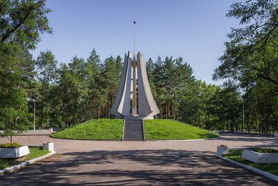
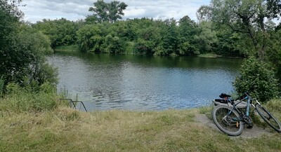

Поездки
Единственная большая поездка что была у меня этим летом это в мой родной город - Котовск.

Краткий обзор
Я ездил в Котовск в начале июля. Я очень ждал этих 2-х недель, так как хотел отдохнуть после первого курса обучнения в колледже. С родителями я докрасил гараж, мы подстригли газон, выбросили тонны хлама. Также, уже который год в эмоциональной разрядке мне помогает мой велосипед.

Мой мальчик со мной уже семь лет и за это время он подарил мне массу удовольствий: с ним я был в тонне мест, набил много синяков и даже пару шрамов, колёса я пробивал на другом конце города, и цепь слетала посреди леса. Вообщем я как обычно хорошо провёл время в родных местах.